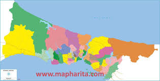

INTERESTİNG FACTS ABOUT COUNTRİES
USA
1. The old name of New York is New Amsterdam

2. American flag designed by a high school student

4.The Statue of Liberty is a gift

Argentina
1.Argentina is the birthplace of Tango
3.The largest dinosaur ever found was in Argentina

England
1.The Queen does not have a passport


2.London has the world's largest library
3.England is a country where more than 300 languages are spoken

4.Big Ben is not actually a clock

TÜRKİYE
1.Türkiye is located on two continents at the same time

3.Turks love tea and drink it always and everywhere
4.Santa Claus was born in Turkish lands